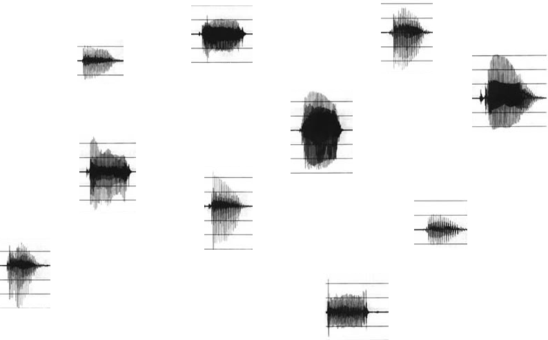
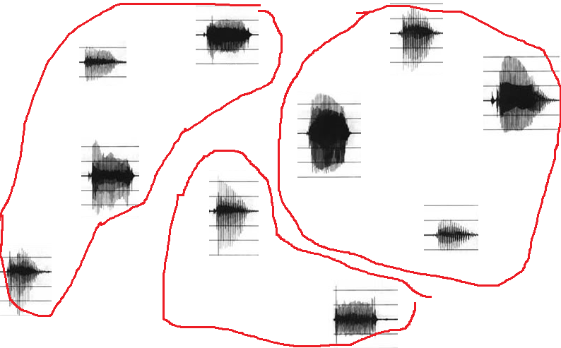

People often get confused about what the difference is between phonetics and phonology.
While phonetics is about describing actual sounds (their physical properties: where you put your tongue
and lips to make a sound, how the air flows when you make a certain sound, etc.), phonology is about describing
the abstract sound system in your mind—specifically, how different sounds are organized into categories
in your mind.
This probably sounds very abstract. To get an idea what this means, let's think about how sounds
can be "different" and how different sounds might need to be organized together.
Watch the first 35 seconds of the below video:
In this video clip, there is a certain word that gets said a lot. Listen to it carefully.
Do you think the people are saying the same thing, or different things?
In fact, every time different people say that word (and even sometimes when the same person says it more than once),
you can notice subtle differences in the way it's pronounced.
List some differences you can notice in the ways people pronounce this word.
In the previous question you brainstormed about different ways that people pronounced the word jobs.
(For example, I noticed that the last guy used a slightly different vowel than the others did: most of them
pronounced it with the vowel [ɑ], but the last guy used the vowel [ɔ], as if he were saying "jawbs".)
Nevertheless, you might feel like they're still saying the "same word". This is a conundrum: these people are
not making the exact same sound, so how does our brain decide that they're saying the same word? If one person
says jobs and another says pants, we will hear different sounds and recognize that they're
different words. But when one person says jobs in one way and another person says jobs another
way, we somehow decide that they're saying the same word, even though they are not making the same
sounds. How do we do that? How do we decide when two sounds are different enough to really be
"different sounds", vs. when two different sounds are still "the same sound"?
Let's look at another example of this same problem. Think about the sound [m] (e.g., the sound at the beginning of moon
or 媽). Using the concepts from the Phonetics module, how would you describe this sound phonetically? What
is the place of articulation (i.e., what part of your mouth do you use to make this sound)? Think about the answer
to this before you read further.
.
..
...
....
..
.
..
...
....
...
..
.
You should have figured out that [m] is a bilabial sound: you make the sound by touching your bottom
lip and your upper lip together.
Now think about the words comfort, nymph, and symphony. Try pronouncing these words
on your own. Pay close attention to what your mouth is doing. Are you pronouncing the m in this word
as a bilabial [m]?
If you aren't sure about your pronunciation and want to see how a native English speaker does it, you can see
how drag queen Manila Luzon pronounces symphony about 1 minute 24 seconds into this MV; watch to see
if her lower lip touches her upper lip or not.
If you pay close attention, you will notice that the "m" in words like symphony, comfort,
or nymph is not a bilabial [m]. It's a labiodental (labio=lips, dental=teeth) sound: it's produced
by touching the bottom lip to the upper teeth (in IPA, it's written as [ɱ]). In other words, it's
physically a different sound than [m]. Nevertheless, anyone who speaks English will probably think it's
"the same" as [m]—most people probably never even notice the difference without doing an exercise
like this one.
Why do you think the "m" in symphony is pronounced as a labiodental stop rather than a bilabial stop?
And why do you think people consider these two different "m" sounds to be "the same"?
The two examples we looked at previously are both illustrating the same problem: language speakers somehow
take different sounds and organize them into groups.
Technically, every sound ever made is different. If you say the same word ten times, the sound that people
around you hear will never be exactly the same twice. Maybe you're sometimes louder and sometimes quieter.
Maybe one time you say the word there's a gust of wind or a car passing in the background. There's always
some random variation in sounds.
To understand language, we need to be able to ignore some small differences. If I tried to understand language
by seeing if someone's pronunciation exactly matches what I've heard before, I would never understand anything.
If, every time a person says jobs, my brain thinks "Well, that is not exactly the same as the
way I pronounce jobs, so I don't recognize it as the word jobs", then I won't understand what
other people are saying. I need to be able to recognize that someone is pronouncing something a bit differently
but it's still the same word. But I can't ignore too many differences: if someone says pants
and I think they are saying jobs, I won't understand them well either. How does our brain decide which
differences are small enough to ignore, and which differences are real differences?
We can visualize the problem as follows. Below are pictures of several sounds (i.e., pictures of the waveforms
created when I record myself saying those sounds).

Physically speaking, these are all different sounds: none of them are exactly the same. However, as a language
speaker, I have to organize them into some categories—maybe some are [k] sounds, some are [t] sounds, some
are [g] sounds, etc. Thus, there must be something in my mind that groups these sounds, to decide which ones
are "the same" and which ones are "different", as shown below.

Can you think of any examples of this problem in another language you know? i.e., are there any specific sounds that are
pronounced in many different ways but you always categorize them as "the same sound" in your mind?